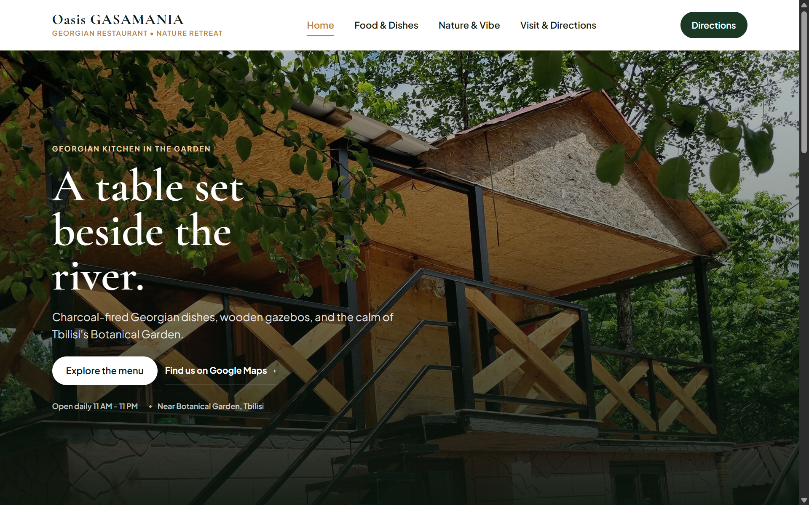
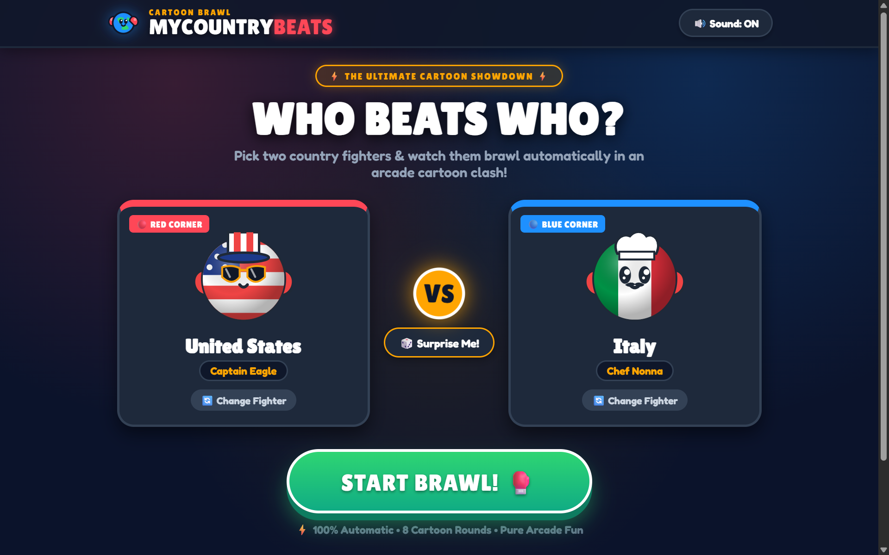
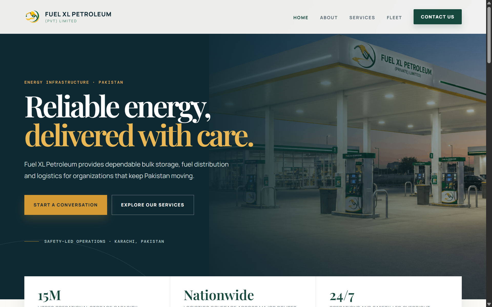
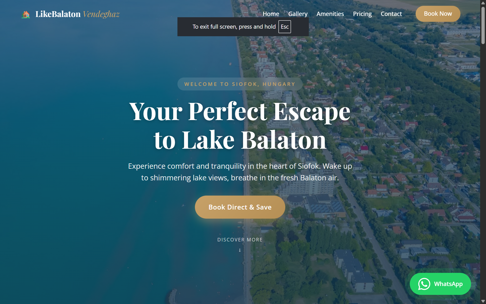

Selected projects · 2025—2026
Made for real places, businesses and people.
From professional company sites to interactive digital ideas, every project starts with the audience it is meant to serve.

01 / 04Oasis Gasamania
A richly visual website for a Georgian restaurant, built to bring its food, atmosphere and location to life online.
Visit live site
02 / 04MyCountryBeats
A fun, engaging country-versus-country experience across food, weather, inventions and more.
Try the project
03 / 04Fuel XL Petroleum
A professional website for a fuel storage company, built to communicate capabilities with clarity and confidence.
Visit live site
04 / 04Like Balaton
A welcoming, refined guest-house website designed to help visitors discover the stay and its surroundings.
Visit live site